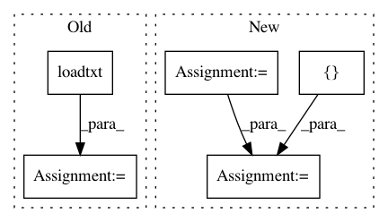

ef419d7898b165aa74d95e68ca83ebfcfccd00f1,qucumber/test_grads_complex.py,,,#,113
Before Change
num_hidden = num_visible
D = 1<<num_visible
// Load bases set
bases = np.loadtxt(path_to_bases,dtype=str)
psi_dict = load_target_psi(bases,path_to_target_psi)
fullunitary_dict = load_full_unitaries(bases,path_to_full_unitaries)
//nn_state = ComplexWavefunction(full_unitaries=full_unitary_dictionary,
After Change
num_visible = train_data.shape[-1]
num_hidden = num_visible
D = 1<<num_visible
vis = generate_visible_space(num_visible)
bases = []//np.loadtxt(path_to_bases,dtype=str)
with open(path_to_bases) as fin:
for line in fin:
bases.append(line.strip())
psi_dict = load_target_psi(bases,path_to_target_psi)
fullunitary_dict = load_full_unitaries(bases,path_to_full_unitaries)
nn_state = ComplexWavefunction(full_unitaries=fullunitary_dict,
psi_dictionary=psi_dict,
num_visible=num_visible,
num_hidden=num_hidden)
Z = partition(nn_state,vis)
compute_numerical_kl(nn_state,psi_dict,vis,Z,unitary_dict,bases)
//print (unitary_dict["X"][:,0,0])
In pattern: SUPERPATTERN
Frequency: 3
Non-data size: 5
Instances
Project Name: PIQuIL/QuCumber
Commit Name: ef419d7898b165aa74d95e68ca83ebfcfccd00f1
Time: 2018-07-23
Author: gtorlai@uwaterloo.ca
File Name: qucumber/test_grads_complex.py
Class Name:
Method Name:
Project Name: ultralytics/yolov3
Commit Name: 324dc6af6e795135ea4e0f32ffb080ca91913977
Time: 2019-02-27
Author: glenn.jocher@ultralytics.com
File Name: utils/utils.py
Class Name:
Method Name: coco80_to_coco91_class
Project Name: craffel/mir_eval
Commit Name: 7d805ab9d26c74db2319658f1ee1d0235f092845
Time: 2014-07-25
Author: craffel@gmail.com
File Name: mir_eval/input_output.py
Class Name:
Method Name: load_time_series